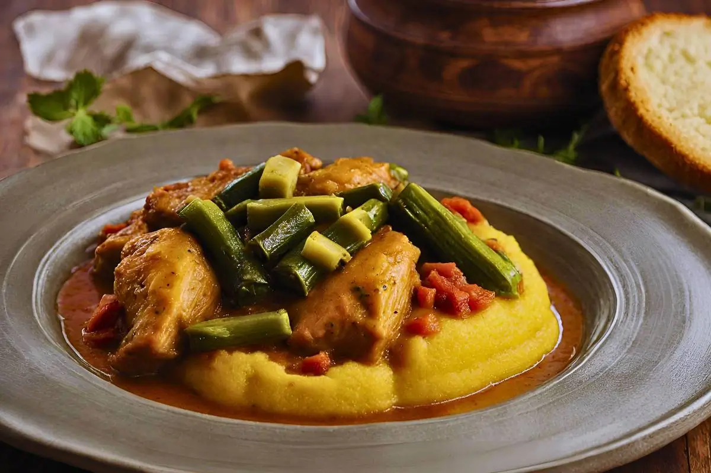
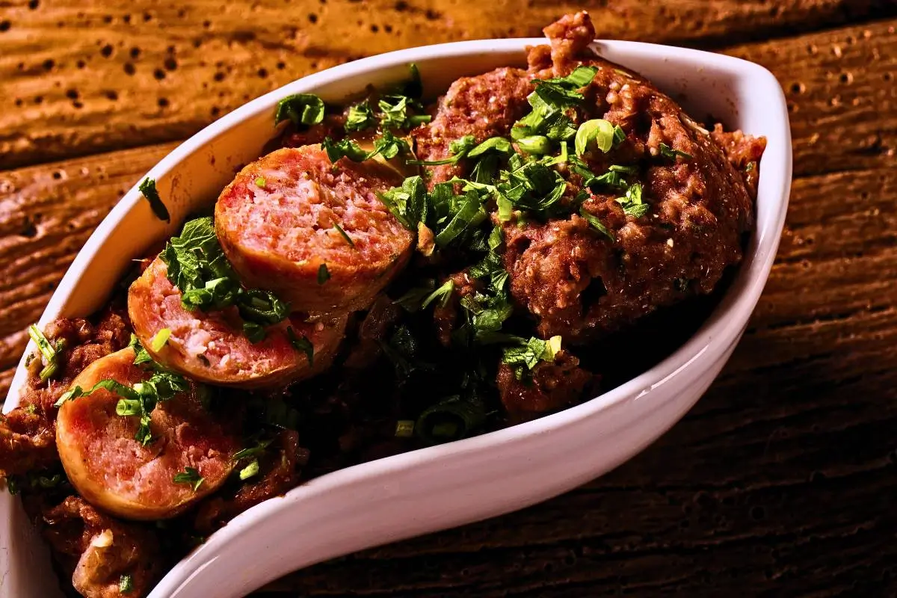
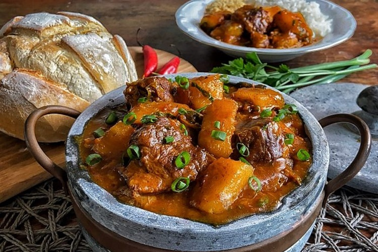
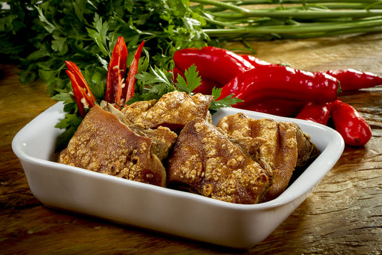
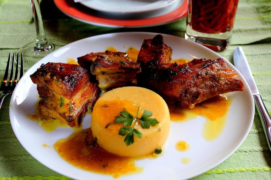

Feijão Tropeiro
Feijão cozido misturado com farinha de mandioca, torresmo, ovos, linguiça e couve.
R$: 25

Frango com Quiabo
Frango caipira ensopado com quiabo, alho, cebola e temperos mineiros. Pode acompanhar angu.
R$: 25

Tutu de Feijão
Feijão batido e engrossado com farinha de mandioca, servido com linguiça, couve refogada, torresmo e arroz.
R$: 20

Vaca Atolada
Costela bovina cozida lentamente com mandioca, em um caldo espesso e saboroso com cheiro-verde e pimenta-do-reino.
R$: 28

Leitão à Pururuca
Leitão assado até a pele ficar crocante, servido com farofa, arroz.
R$: 45

Costelinha com Ora-Pro-Nóbis
Carne de porco cozida com a planta ora-pro-nóbis, muito popular em Minas.